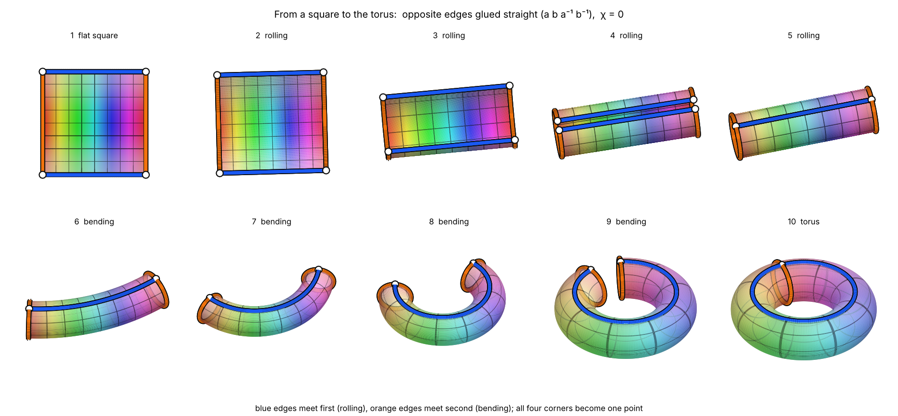

From a square to the torus

Animated version: torus-sequence.webp. Single frames: stages/.

Gluing: a b a⁻¹ b⁻¹. Opposite edges are glued straight, with no flip.
Corners: all four become one point, so χ = 1 − 2 + 1 = 0.
Stages: - 1–5, rolling: the square rolls into a cylinder until the blue edges meet. - 6–10, bending: the cylinder bends into a ring until its two ends, the orange edges, meet. It stretches lengthwise as it bends, so the ring doesn’t pinch shut at the centre.
The result is a genuine embedding: the surface never passes through itself.
Generated by ../surface-sequences/surface_sequences.py
(python surface_sequences.py torus keys). Conventions are
described in the overview.